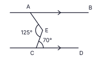
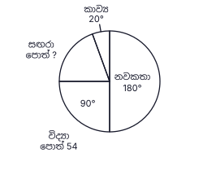
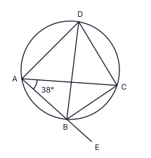
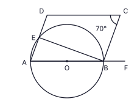
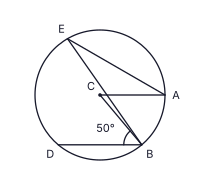
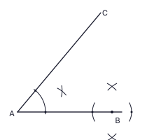

A කොටස
සියලුම ප්රශ්නවලට මෙම පත්රයේම පිළිතුරු සපයන්න. π = 227 ලෙස ගන්න. (ලකුණු 2 × 25 = 50)
කර්මාන්තශාලාවක කම්කරුවන් 8 දෙනෙකුට ඇණවුමක් දින 18 කින් නිම කළ හැකිය. එම වේගයෙන්ම වැඩ කරන තවත් කම්කරුවන් කී දෙනෙකු යොදවා එම ඇණවුම දින 12 කින් නිම කළ හැකි ද?
රූපයේ AB ∥ CD වේ. AÊC = 125° ද EĈD = 70° ද නම් BÂE හි විශාලත්වය සොයන්න.

සුළු කරන්න: 34x − 56x + 23x
සෘජු ත්රිකෝණාස්ර ප්රිස්මයක මුහුණතක් විය නොහැක්කේ පහත සඳහන් කුමක් ද? එහි අංකය ලියන්න.
(i) සමචතුරස්රයක් (ii) බද්ධ පාද අසමාන සෘජුකෝණාස්රයක් (iii) සෘජු කෝණයක් නොමැති සමාන්තරාස්රයක්
පුස්තකාලයකින් එක්තරා දිනයක ලබාගත් පොත් වර්ග හතරකට බෙදී ඇති ආකාරය වට ප්රස්තාරයෙන් දැක්වේ. විද්යා පොත් 54 ක් ලබාගෙන ඇත. ලබාගත් සඟරා ගණන සොයන්න.

රූපයේ O වෘත්තයේ කේන්ද්රය වන අතර DOC සරල රේඛාව AB ජ්යාව එහි මධ්ය ලක්ෂ්යය C හිදී හමු වේ. AÊB = 100° නම් CD̂B හි විශාලත්වය සොයන්න.

සාධක සොයන්න: 4x2 − 36
lg 3.58 = 0.5539 නම් lg 358 හි අගය ලියන්න.
රූපයේ AB යනු කර්මාන්තශාලාවක සිරස් දුමාරු බටයක් වන අතර AC සමතලා බිමයි. දුමාරු බටයේ මුදුන වන B හි කුරුල්ලෙක් ද C හි මීයෙක් ද සිටී. රූපයේ C සිට B හි ආරෝහණ කෝණය a ලෙස ද B සිට C හි අවරෝහණ කෝණය b ලෙස ද සලකුණු කර, a හා b අතර සම්බන්ධය ලියන්න.

කර්මාන්තශාලාවක සිලින්ඩරාකාර ටින් නිපදවයි. ටින් එකක උස එහි පාදයේ අරය r මෙන් 5 ගුණයකි. ටින් එකක වක්ර පෘෂ්ඨය ආවරණය කිරීමට අවශ්ය කඩදාසි වර්ගඵලයේ සිට එක් වෘත්තාකාර පාදයක් ආවරණය කිරීමට අවශ්ය කඩදාසි වර්ගඵලයට අනුපාතය සරලම ආකාරයෙන් ලියන්න. (සිලින්ඩරයක වක්ර පෘෂ්ඨයේ වර්ගඵලය = 2πrh)
මුහුණත් 1, 2, 4, 5 ලෙස අංක කරන ලද නොනැඹුරු චතුස්තලීය දාදු කැට දෙකක් එකවර උඩ දමා ඒවායේ පහළ මුහුණත්වල ඇති සංඛ්යා දෙක එකතු කරනු ලැබේ. එකතුව 6 වීමේ සම්භාවිතාව සොයන්න.
රූපයේ ABC සරල රේඛාවකි. AD = DB = BC වේ. AD̂B = 40° නම් x හි අගය සොයන්න.

ξ = {x : 1 ≤ x ≤ 12, x නිඛිල} සර්වත්ර කුලකය වේ. ξ හි 3 හි ගුණාකාර A කුලකයද ඉරට්ටේ සංඛ්යා B කුලකයද වේ. නිවැරදි ප්රකාශයේ අංකය ලියන්න.
(i) A ∩ B = {6} (ii) n(A ∪ B) = 8 (iii) n(A) = 3
සුළු කරන්න: (6x2y3 × 4x3y) ÷ 12xy2
ගුණෝත්තර ශ්රේඪියක දෙවන පදය −2 ද තෙවන පදය −6 ද වේ. එහි පස්වන පදය සොයන්න.
ABCD වෘත්ත චතුරස්රයකි. BD මගින් AD̂C සමච්ඡේදනය වේ. AB, E දක්වා දික් කර ඇත. BÂC = 38° නම් CB̂E හි විශාලත්වය සොයන්න.

8a3b2, 12a2b3 සහ 20a2b හි මහා පොදු සාධකය සොයන්න.
පාදයේ වර්ගඵලය 154 cm2 වූ ත්රිකෝණාකාර පාදයක් සහිත ඝන ලෝහ ප්රිස්මයක් උණු කර, නාස්තියකින් තොරව, එම උසම ඇති අරය r cm වූ ඝන සිලින්ඩරයක් සාදනු ලැබේ. r සොයන්න. (සිලින්ඩරයක පරිමාව = πr2h)
ABC ත්රිකෝණයේ D හා E යනු පිළිවෙළින් AB හා AC හි මධ්ය ලක්ෂ්ය වේ. AD̂E = 90° ද AD = 8 cm ද DE = 6 cm ද වේ. BCED චතුරස්රයේ පරිමිතිය සොයන්න.

(2, 1) හා (5, 7) ලක්ෂ්ය හරහා යන සරල රේඛාවේ සමීකරණය සොයන්න.
රූපයේ O වෘත්තයේ කේන්ද්රය වන අතර AOBF සරල රේඛාවකි. ABCD සමාන්තරාස්රයකි. AD රේඛාව වෘත්තය හමු වන ලක්ෂ්යය E වේ. BĈD = 70° නම් EB̂F හි විශාලත්වය සොයන්න.

ප්රදීප් වාර්ෂික වැල් පොලී අනුපාතිකය 8% ක් යටතේ මුදලක් අවුරුදු 2 ක් සඳහා ආයෝජනය කළේය. දෙවන වර්ෂයේදී ඔහුට ලැබුණු පොලිය රු. 2 160 කි. ඔහු ආයෝජනය කළ මුදල සොයන්න.
රූපයේ C වෘත්තයේ කේන්ද්රය වන අතර AC ∥ BD වේ. CB̂D = 50° නම් AÊB හි විශාලත්වය සොයන්න.

2x + 9 > 1 අසමානතාව විසඳා එය තෘප්ත කරන ඍණ නිඛිල ලියන්න.
A ලක්ෂ්යයෙන් වෘත්තයකට ඇඳි ස්පර්ශක දෙකක් AB හා AC වන අතර AB වෘත්තය B හිදී ස්පර්ශ කරයි. වෘත්තයේ කේන්ද්රය O සෙවීමට අවශ්ය ඉදිකිරීම් රේඛා කිහිපයක් රූපයේ දැක්වේ. ඒවා භාවිතයෙන් ඉදිකිරීම සම්පූර්ණ කර කේන්ද්රය O ලකුණු කරන්න. (ඉදිකිරීම් රේඛා පැහැදිලිව පෙනිය යුතුය.)
